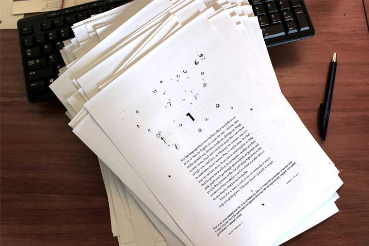

So close but so far away . . .
15 November 2017
The publisher sent me this photo yesterday to tease me! Early copies back from the printers. Very exciting but I wish they were in my hands – not so far away in Melbourne!

9/10/17
9 October 2017
Finally, finally (I think) finished edits for Rain Fall. Off to the printers this week, due in bookstores January. Allen & Unwin have done an amazing job. Very excited (if not a little bit terrified).
Hey, been meaning to tell you!
13 May 2017
Been meaning to tell you about the Bologna Children’s Book Fair. It’s in northern Italy and is the biggest children’s book fair in the world and is held every May. My publisher Allen & Unwin represent me there every year but this time my books were also there at the Dunedin City of Literature stand.
Dunedin, where I live, was given the opportunity because it is a UNESCO City of Literature and Bologna, being a UNESCO City of Music, invited us there. I wrote it about for The Sapling which you can read in the link below. So, pretty exciting, for Dunedin and for me!
23/12/2016
23 December 2016
Latest news! My new book is coming out March 2018 (I know, so far away!) with Allen & Unwin. And it’s the one that made me cry when I wrote the ending (see post 2/3/2016) so it’s dear to my heart and it has a murder and a girl and a boy and it’s set in one of the most amazing places in the country. Hope the waiting will not be too unbearable but it will be worth it, I PROMISE.
Auckland Writers Festival
12 May 2016
Loving the Auckland Writers Festival! Talked to thousands of kids, workshops, meeting other authors, it's like, wow! And now I've done my stuff and can just sit back and listen and watch everyone else for the next four days. Thank you Auckland!!!!
2/3/16
2 March 2016
What does it mean when you have to stop writing to go find tissues (and I'm not talking about because I'm sneezing) when you are writing the last words of a book?
Great News!
21 December 2015
It's official - I can tell everyone! The New Zealand Film Commission is funding the writing of a script for Night Vision. This doesn't mean that a film is definitely going to get made but it's a step (a very small step) to that happening and it is so great that the commission thinks it's a story that could be made into a film. Wow. Very, very exciting!
19/6/15
19 June 2015
Stopped in at Unity Books Wellington in Wellington with Leonie Agnew on Tuesday. Our thanks to the staff at Unity for the amazing welcome - fantastic book shop!

4/7/14
4 July 2014
My Italian copies of Night Vision have arrived in the mail and not only are they hard cover (I've never been published in hard cover before) but the yellow piece at the bottom translates as (thank you to Google) "As poetic as The Curious Incident of the Dog in the Night-Time and as disturbing as The Lovely Bones. A fabulous novel." I'm trying to get my head around being compared with such heavy weights in the book industry. Wow. And you can buy it in Italy for 12 euro!
Ella West is a multi-award winner teen thriller writer who farms sheep and beef with her husband near Dunedin in the South Island of New Zealand. She likes cooking and gardening but doesn’t like cleaning the bathroom. She occasionally goes trout fishing with her family and they hate her when she catches a fish and they don’t. Her chickens keep getting out and destroying her garden. In other words, life is tough.
And then there’s the sheep.
WARNING: Do not start reading an Ella West Book when you are about to go to sleep. Ella West will not be responsible for late nights, sleeping in or missing the start of school the following day.
Latest Book

Rain Fall
I lived in Westport for about 15 years after I graduated from university. I went there for my first fulltime job and fell in love with the place. When I went back a few years ago for an author tour, a pupil at one of my talks asked me why I hadn’t written a book set in Westport and I didn’t have an answer. So I wrote this book.
Due out January 2018
Pre-order at your local bookshop now